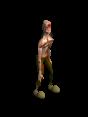
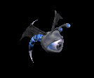
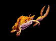
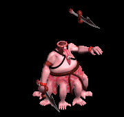
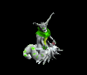
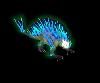
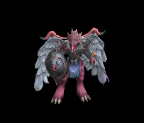

ダガー(投擲) をドロップするmob一覧
一覧ページへ
| リビングデッド | アンデット | 一般1 | |||||||
|---|---|---|---|---|---|---|---|---|---|
|  | 投擲(410) | 牙(270) | イベント(410) | 腰(230) | 爪(210) | 帰還(160) | 双剣(270) | ||
| グール | アンデット | 一般2 | |||||||
 | 投擲(380) | スリング(250) | イベント(380) | 足(210) | 爪(190) | 帰還(150) | |||
| ゾンビ | アンデット | 一般3 | |||||||
 | 投擲(360) | 牙(240) | イベント(360) | 兜・帽子(200) | 爪(180) | 帰還(140) | 双剣(240) | ||
| スプーク | アンデット | セミ1 | |||||||
 | 投擲(390) | スリング(260) | 状態異常回復1(390) | 腰(220) | 爪(200) | 帰還(160) | |||
| デスピンサー | アンデット | ボス1 | |||||||
 | 投擲(470) | 牙(310) | 状態異常回復1(470) | 鎧(260) | 爪(240) | 帰還(190) | 双剣(310) | ||
| ワイト | アンデット | セミ3 | |||||||
 | 杖(450) | 投擲(300) | CP回復(450) | グローブ(250) | 冠(230) | ブローチ(300) | 本(450) | ||
| アークリッチ | アンデット | ボス3 | |||||||
 | 杖(510) | 投擲(340) | 状態異常回復2(130) | グローブ(280) | 冠(260) | ブローチ(500) | 本(510) | ||
| シーフ | 人間 | 一般1 | |||||||
 | 投擲(410) | ステッキ(270) | イベント(410) | 職業鎧(230) | 指輪(210) | 特殊1(160) | |||
| ローグ | 人間 | 一般2 | |||||||
 | 投擲(380) | ステッキ(250) | 鍵(10) | 職業鎧(210) | 爪(190) | 特殊1(150) | |||
| スナッチャー | 人間 | 一般3 | |||||||
 | 投擲(360) | ステッキ(140) | 鍵(30) | 職業鎧(200) | 爪(180) | 特殊1(140) | |||
| ロバー | 人間 | セミ1 | |||||||
 | 投擲(390) | ステッキ(260) | 弾(390) | 職業鎧(220) | 爪(200) | 特殊1(160) | |||
| アサシン | 人間 | セミ2 | |||||||
 | 投擲(420) | ステッキ(280) | 矢(420) | 職業鎧(230) | 爪(210) | 特殊1(170) | 魔弾(420) | ||
| ダークサマナー | 人間 | 一般2 | |||||||
 | 鞭(380) | 投擲(250) | 弾(380) | 腰(210) | イヤリング(190) | 肩刺青(110) | |||
| レッドアイ所員 | 人間 | 一般3 | |||||||
 | 鞭(360) | 投擲(240) | 弾(360) | 腰(200) | イヤリング(180) | 肩刺青(120) | |||
| 堕落予言者 | 人間 | ボス1 | |||||||
 | 鞭(470) | 投擲(310) | CP回復(470) | 腰(260) | イヤリング(240) | 肩刺青(150) | |||
| エルフ暗殺者 | 人間 | 一般4 | |||||||
 | 片手剣(300) | 投擲(200) | 盾(300) | 兜・帽子(170) | 指輪(150) | 腕刺青(130) | クロー(300) | ||
| ビホルダー | 悪魔 | セミ2 | |||||||
 | 投擲(420) | 翼(280) | 状態異常回復1(420) | 兜・帽子(230) | 冠(210) | 帰還(170) | 水晶(280) | ||
| オーバーシアー | 悪魔 | ボス2 | |||||||
|  | 投擲(490) | 翼(330) | CP回復(490) | 兜・帽子(270) | 冠(250) | 帰還(200) | 水晶(330) | ||
| ラットマン | 悪魔 | 一般1 | |||||||
 | 投擲(410) | 笛(270) | 弾(410) | 足(230) | 指輪(210) | 帰還(160) | |||
| ワーラット | 悪魔 | 一般2 | |||||||
 | 投擲(380) | ステッキ(250) | 矢(380) | 足(210) | 槍投擲機(190) | 帰還(150) | 魔弾(380) | ||
| ラティアン | 悪魔 | 一般3 | |||||||
 | 投擲(360) | 笛(240) | 弾(360) | 足(200) | 手首(180) | 帰還(140) | |||
| ラットシーフ | 悪魔 | 一般4 | |||||||
 | 投擲(300) | ステッキ(200) | 矢(300) | 足(170) | 槍投擲機(150) | 能力向上2(120) | 魔弾(300) | ||
| ラットキング | 悪魔 | ボス1 | |||||||
 | 投擲(470) | 笛(310) | 弾(470) | 足(260) | 冠(240) | 能力向上1(190) | |||
| スパイダー | 動物 | 一般1 | |||||||
 | 片手剣(410) | 投擲(270) | 矢(410) | グローブ(230) | 首(210) | 帰還(160) | クロー(410) | 魔弾(410) | |
| フェイズスパイダ | 動物 | 一般2 | |||||||
 | 片手剣(380) | 投擲(250) | 矢(380) | グローブ(210) | 首(190) | 帰還(150) | クロー(380) | 魔弾(380) | |
| アラクノーイド | 動物 | ボス1 | |||||||
 | 片手剣(470) | 投擲(310) | 矢(470) | グローブ(260) | 首(240) | 宝石(190) | クロー(470) | 魔弾(470) | |
| クラブシェル | 動物 | 一般1 | |||||||
 | 投擲(410) | 両手剣(270) | 盾(410) | 足(230) | 爪(210) | 帰還(160) | 鎌(270) | ||
| ビッグクラブ | 動物 | 一般2 | |||||||
|  | 投擲(380) | 両手剣(250) | 状態異常回復1(380) | 足(210) | 指輪(190) | 能力向上2(150) | 鎌(250) | ||
| サイドウォーカー | 動物 | 一般3 | |||||||
 | 投擲(360) | 両手剣(240) | 盾(360) | 足(200) | 爪(180) | 宝石(140) | 鎌(240) | ||
| キングクラブ | 動物 | セミ1 | |||||||
 | 投擲(390) | 両手剣(260) | 状態異常回復1(390) | 足(220) | 指輪(200) | 帰還(160) | 鎌(260) | ||
| キャンサー | 動物 | ボス1 | |||||||
 | 投擲(470) | 両手剣(310) | 状態異常回復1(470) | 腰(260) | 爪(240) | 宝石(190) | 鎌(310) | ||
| オクトパストン | 神獣 | 一般1 | |||||||
 | 双剣(270) | 投擲(100) | 牙(270) | ||||||
| 凍破 | 神獣 | 一般2 | |||||||
 | 双剣(250) | 投擲(100) | 牙(250) | ||||||
| キャストアイ | 神獣 | 一般3 | |||||||
 | 双剣(240) | 投擲(100) | 牙(240) | ||||||
| スノーツリー | 神獣 | セミ1 | |||||||
 | 双剣(260) | 投擲(100) | 牙(260) | ||||||
| サーリビラエ | 神獣 | ボス1 | |||||||
|  | 双剣(310) | 投擲(100) | 牙(310) | ||||||
| オデロンガゴイル | 神獣 | ボス2 | |||||||
 | 鞭(490) | 投擲(330) | |||||||
| リプリートマーキ | 神獣 | 一般4 | |||||||
 | 銃(200) | 投擲(100) | 弓(200) | ||||||
| ウィルオウィスプ | 神獣 | セミ1 | |||||||
|  | 銃(260) | 投擲(100) | 弓(260) | ||||||
| リビングデッドEx | アンデット | 一般1 | |||||||
| 投擲(410) | 牙(270) | イベント(410) | 腰(230) | 爪(210) | 帰還(160) | 双剣(270) | |||
| グールEx | アンデット | 一般2 | |||||||
| 投擲(380) | スリング(250) | イベント(380) | 足(210) | 爪(190) | 帰還(150) | |||
| ゾンビEx | アンデット | 一般3 | |||||||
| 投擲(360) | 牙(240) | イベント(360) | 兜・帽子(200) | 爪(180) | 帰還(140) | 双剣(240) | ||
| スプークEx | アンデット | セミ1 | |||||||
| 投擲(450) | スリング(300) | 状態異常回復1(450) | 腰(250) | 爪(230) | 帰還(180) | |||
| デスピンサーEx | アンデット | ボス1 | |||||||
| 投擲(1200) | 牙(800) | 状態異常回復1(1200) | 鎧(670) | 爪(600) | 帰還(480) | 双剣(800) | ||
| ワイトEx | アンデット | セミ3 | |||||||
| 杖(800) | 投擲(530) | CP回復(800) | グローブ(440) | 冠(400) | 宝石(320) | 本(800) | ||
| アークリッチEx | アンデット | ボス3 | |||||||
| 杖(2800) | 投擲(1870) | 状態異常回復2(700) | グローブ(1560) | 冠(1400) | 宝石(1120) | 本(2800) | ||
| シーフEx | 人間 | 一般1 | |||||||
| 投擲(410) | ステッキ(270) | イベント(410) | 職業鎧(230) | 指輪(210) | 特殊1(160) | |||
| ローグEx | 人間 | 一般2 | |||||||
| 投擲(380) | ステッキ(250) | 鍵(20) | 職業鎧(210) | 爪(190) | 特殊1(150) | |||
| スナッチャーEx | 人間 | 一般3 | |||||||
| 投擲(360) | ステッキ(240) | 鍵(30) | 職業鎧(200) | 爪(180) | 特殊1(140) | |||
| ロバーEx | 人間 | セミ1 | |||||||
| 投擲(450) | ステッキ(300) | 弾(450) | 職業鎧(250) | 爪(230) | 特殊1(180) | |||
| アサシンEx | 人間 | セミ2 | |||||||
| 投擲(650) | ステッキ(430) | 矢(650) | 職業鎧(360) | 爪(330) | 特殊1(260) | 魔弾(650) | ||
| ダークサマナーEx | 人間 | 一般2 | |||||||
| 鞭(380) | 投擲(250) | 弾(380) | 腰(210) | イヤリング(190) | 肩刺青(110) | |||
| レッドアイ所員Ex | 人間 | 一般3 | |||||||
| 鞭(360) | 投擲(240) | 弾(360) | 腰(200) | イヤリング(180) | 肩刺青(120) | |||
| 堕落予言者Ex | 人間 | ボス1 | |||||||
| 鞭(1200) | 投擲(800) | CP回復(1200) | 腰(670) | イヤリング(600) | 肩刺青(150) | |||
| エルフ暗殺者Ex | 人間 | 一般4 | |||||||
| 片手剣(300) | 投擲(200) | 盾(300) | 兜・帽子(170) | 指輪(150) | 腕刺青(130) | クロー(300) | ||
| ビホルダーEx | 悪魔 | セミ2 | |||||||
| 投擲(650) | 翼(430) | 状態異常回復1(650) | 兜・帽子(360) | 冠(330) | 帰還(260) | 水晶(430) | ||
| オーバーシアーEx | 悪魔 | ボス2 | |||||||
| 投擲(2000) | 翼(1330) | CP回復(2000) | 兜・帽子(1110) | 冠(1000) | 帰還(800) | 水晶(1330) | |||
| ラットマンEx | 悪魔 | 一般1 | |||||||
| 投擲(410) | 笛(270) | 弾(410) | 足(230) | 指輪(210) | 帰還(160) | |||
| ワーラットEx | 悪魔 | 一般2 | |||||||
| 投擲(380) | ステッキ(250) | 矢(380) | 足(210) | 槍投擲機(190) | 帰還(150) | 魔弾(380) | ||
| ラティアンEx | 悪魔 | 一般3 | |||||||
| 投擲(360) | 笛(240) | 弾(360) | 足(200) | 手首(180) | 帰還(140) | |||
| ラットシーフEx | 悪魔 | 一般4 | |||||||
| 投擲(300) | ステッキ(200) | 矢(300) | 足(170) | 槍投擲機(150) | 能力向上2(120) | 魔弾(300) | ||
| ラットキングEx | 悪魔 | ボス1 | |||||||
| 投擲(1200) | 笛(800) | 弾(1200) | 足(670) | 冠(600) | 能力向上1(480) | |||
| スパイダーEx | 動物 | 一般1 | |||||||
| 片手剣(410) | 投擲(270) | 矢(410) | グローブ(230) | 首(210) | 帰還(160) | クロー(410) | 魔弾(410) | |
| フェイズスパイダEx | 動物 | 一般2 | |||||||
| 片手剣(380) | 投擲(250) | 矢(380) | グローブ(210) | 首(190) | 帰還(150) | クロー(380) | 魔弾(380) | |
| アラクノーイドEx | 動物 | ボス1 | |||||||
| 片手剣(1200) | 投擲(800) | 矢(1200) | グローブ(670) | 首(600) | 宝石(480) | クロー(1200) | 魔弾(1200) | |
| クラブシェルEx | 動物 | 一般1 | |||||||
| 投擲(410) | 両手剣(270) | 盾(410) | 足(230) | 爪(210) | 帰還(160) | 鎌(270) | ||
| ビッグクラブEx | 動物 | 一般2 | |||||||
| 投擲(380) | 両手剣(250) | 状態異常回復1(380) | 足(210) | 指輪(190) | 能力向上2(150) | 鎌(250) | |||
| サイドウォーカーEx | 動物 | 一般3 | |||||||
| 投擲(360) | 両手剣(240) | 盾(360) | 足(200) | 爪(180) | 宝石(140) | 鎌(240) | ||
| キングクラブEx | 動物 | セミ1 | |||||||
| 投擲(450) | 両手剣(300) | 状態異常回復1(450) | 足(250) | 指輪(230) | 帰還(180) | 鎌(300) | ||
| キャンサーEx | 動物 | ボス1 | |||||||
| 投擲(1200) | 両手剣(800) | 状態異常回復1(1200) | 腰(670) | 爪(600) | 宝石(480) | 鎌(800) | ||
| オクトパストンEx | 神獣 | 一般1 | |||||||
| 投擲(410) | 牙(270) | イベント(410) | マント(230) | 首(210) | 肩刺青(170) | 双剣(270) | ||
| 凍破Ex | 神獣 | 一般2 | |||||||
| 投擲(380) | 牙(250) | イベント(380) | マント(210) | 首(190) | 肩刺青(180) | 双剣(250) | ||
| キャストアイEx | 神獣 | 一般3 | |||||||
| 投擲(360) | 牙(240) | イベント(360) | マント(200) | 首(180) | 肩刺青(190) | 双剣(240) | ||
| スノーツリーEx | 神獣 | セミ1 | |||||||
| 投擲(450) | 牙(300) | イベント(450) | マント(250) | 首(230) | 肩刺青(200) | 双剣(300) | ||
| サーリビラエEx | 神獣 | ボス1 | |||||||
| 投擲(1200) | 牙(800) | イベント(1200) | マント(670) | 首(600) | 肩刺青(210) | 双剣(800) | |||
| オデロンガゴイルEx | 神獣 | ボス2 | |||||||
| 鞭(2000) | 投擲(1330) | 鍵(60) | 兜・帽子(1110) | 爪(1000) | 能力向上1(800) | |||
| リプリートマーキEx | 神獣 | 一般4 | |||||||
| 投擲(300) | 弓(200) | 盾(300) | マント(170) | 指輪(150) | 特殊1(120) | 銃(200) | ||
| ウィルオウィスプEx | 神獣 | セミ1 | |||||||
| 投擲(450) | 弓(300) | 盾(450) | 腰(250) | 指輪(230) | 特殊1(180) | 銃(300) | |||
| リビングデッドZin | アンデット | 一般1 | |||||||
| 投擲(1210) | 牙(810) | イベント(1210) | 腰(670) | 爪(610) | 帰還(480) | 双剣(810) | |||
| グールZin | アンデット | 一般2 | |||||||
| 投擲(1380) | スリング(920) | イベント(1380) | 足(770) | 爪(690) | 帰還(550) | |||
| ゾンビZin | アンデット | 一般3 | |||||||
| 投擲(1560) | 牙(1040) | イベント(1560) | 兜・帽子(870) | 爪(780) | 帰還(620) | 双剣(1040) | ||
| スプクZin | アンデット | セミ1 | |||||||
| 投擲(650) | スリング(430) | 状態異常回復1(650) | 腰(360) | 爪(330) | 帰還(260) | |||
| デスピンサーZin | アンデット | ボス1 | |||||||
| 投擲(1000) | 牙(670) | 状態異常回復1(1000) | 鎧(560) | 爪(500) | 帰還(400) | 双剣(670) | ||
| ワイトZin | アンデット | セミ3 | |||||||
| 杖(900) | 投擲(600) | CP回復(900) | グローブ(500) | 冠(450) | 宝石(360) | 本(900) | ||
| アークリッチZin | アンデット | ボス3 | |||||||
| 杖(1200) | 投擲(800) | 状態異常回復2(300) | グローブ(670) | 冠(600) | 宝石(480) | 本(1200) | ||
| シーフZin | 人間 | 一般1 | |||||||
| 投擲(1210) | ステッキ(810) | イベント(1210) | 職業鎧(670) | 指輪(610) | 特殊1(480) | |||
| ローグZin | 人間 | 一般2 | |||||||
| 投擲(1380) | ステッキ(920) | 鍵(110) | 職業鎧(770) | 爪(690) | 特殊1(550) | |||
| スナッチャーZin | 人間 | 一般3 | |||||||
| 投擲(1560) | ステッキ(1040) | 鍵(170) | 職業鎧(870) | 爪(780) | 特殊1(620) | |||
| ロバーZin | 人間 | セミ1 | |||||||
| 投擲(650) | ステッキ(430) | 弾(650) | 職業鎧(360) | 爪(330) | 特殊1(260) | |||
| アサシンZin | 人間 | セミ2 | |||||||
| 投擲(750) | ステッキ(500) | 矢(750) | 職業鎧(420) | 爪(380) | 特殊1(300) | 魔弾(750) | ||
| ダークサマナーZin | 人間 | 一般2 | |||||||
| 鞭(1380) | 投擲(920) | 弾(1380) | 腰(770) | イヤリング(690) | 肩刺青(110) | |||
| レッドアイ所員Zin | 人間 | 一般3 | |||||||
| 鞭(1560) | 投擲(1040) | 弾(1560) | 腰(870) | イヤリング(780) | 肩刺青(120) | |||
| 堕落予言者Zin | 人間 | ボス1 | |||||||
| 鞭(1000) | 投擲(670) | CP回復(1000) | 腰(560) | イヤリング(500) | 肩刺青(150) | |||
| エルフ暗殺者Zin | 人間 | 一般4 | |||||||
| 片手剣(1200) | 投擲(800) | 盾(1200) | 兜・帽子(670) | 指輪(600) | 腕刺青(130) | クロー(1200) | ||
| ビホルダーZin | 悪魔 | セミ2 | |||||||
| 投擲(750) | 翼(500) | 状態異常回復1(750) | 兜・帽子(420) | 冠(380) | 帰還(300) | 水晶(500) | ||
| オーバーシアーZin | 悪魔 | ボス2 | |||||||
| 投擲(1100) | 翼(730) | CP回復(1100) | 兜・帽子(610) | 冠(550) | 帰還(440) | 水晶(730) | |||
| ラットマンZin | 悪魔 | 一般1 | |||||||
| 投擲(1210) | 笛(810) | 弾(1210) | 足(670) | 指輪(610) | 帰還(480) | |||
| ワーラットZin | 悪魔 | 一般2 | |||||||
| 投擲(1380) | ステッキ(920) | 矢(1380) | 足(770) | 槍投擲機(690) | 帰還(550) | 魔弾(1380) | ||
| ラティアンZin | 悪魔 | 一般3 | |||||||
| 投擲(1560) | 笛(1040) | 弾(1560) | 足(870) | 手首(780) | 帰還(620) | |||
| ラットシーフZin | 悪魔 | 一般4 | |||||||
| 投擲(1200) | ステッキ(800) | 矢(1200) | 足(670) | 槍投擲機(600) | 能力向上2(480) | 魔弾(1200) | ||
| ラットキングZin | 悪魔 | ボス1 | |||||||
| 投擲(1000) | 笛(670) | 弾(1000) | 足(560) | 冠(500) | 能力向上1(400) | |||
| スパイダーZin | 動物 | 一般1 | |||||||
| 片手剣(1210) | 投擲(810) | 矢(1210) | グローブ(670) | 首(610) | 帰還(480) | クロー(1210) | 魔弾(1210) | |
| フェイズスパイダZin | 動物 | 一般2 | |||||||
| 片手剣(1380) | 投擲(920) | 矢(1380) | グローブ(770) | 首(690) | 帰還(550) | クロー(1380) | 魔弾(1380) | |
| アラクノーイドZin | 動物 | ボス1 | |||||||
| 片手剣(1000) | 投擲(670) | 矢(1000) | グローブ(560) | 首(500) | 宝石(400) | クロー(1000) | 魔弾(1000) | |
| クラブシェルZin | 動物 | 一般1 | |||||||
| 投擲(1210) | 両手剣(810) | 盾(1210) | 足(670) | 爪(610) | 帰還(480) | 鎌(810) | ||
| ビッグクラブZin | 動物 | 一般2 | |||||||
| 投擲(1380) | 両手剣(920) | 状態異常回復1(1380) | 足(770) | 指輪(690) | 能力向上2(550) | 鎌(920) | |||
| サイドウォーカーZin | 動物 | 一般3 | |||||||
| 投擲(1560) | 両手剣(1040) | 盾(1560) | 足(870) | 爪(780) | 宝石(620) | 鎌(1040) | ||
| キングクラブZin | 動物 | セミ1 | |||||||
| 投擲(650) | 両手剣(430) | 状態異常回復1(650) | 足(360) | 指輪(330) | 帰還(260) | 鎌(430) | ||
| キャンサーZin | 動物 | ボス1 | |||||||
| 投擲(1000) | 両手剣(670) | 状態異常回復1(1000) | 腰(560) | 爪(500) | 宝石(400) | 鎌(670) | ||
| オクトパストンZin | 神獣 | 一般1 | |||||||
| 投擲(1210) | 牙(810) | イベント(1210) | マント(670) | 首(610) | 肩刺青(170) | 双剣(810) | ||
| 凍破Zin | 神獣 | 一般2 | |||||||
| 投擲(1380) | 牙(920) | イベント(1380) | マント(770) | 首(690) | 肩刺青(180) | 双剣(920) | ||
| キャストアイZin | 神獣 | 一般3 | |||||||
| 投擲(1560) | 牙(1040) | イベント(1560) | マント(870) | 首(780) | 肩刺青(190) | 双剣(1040) | ||
| スノーツリーZin | 神獣 | セミ1 | |||||||
| 投擲(650) | 牙(430) | イベント(650) | マント(360) | 首(330) | 肩刺青(200) | 双剣(430) | ||
| サーリビラエZin | 神獣 | ボス1 | |||||||
| 投擲(1000) | 牙(670) | イベント(1000) | マント(560) | 首(500) | 肩刺青(210) | 双剣(670) | |||
| オデロンガゴイルZin | 神獣 | ボス2 | |||||||
| 鞭(1100) | 投擲(730) | 鍵(100) | 兜・帽子(610) | 爪(550) | 能力向上1(440) | |||
| リプリートマーキZin | 神獣 | 一般4 | |||||||
| 投擲(1200) | 弓(800) | 盾(1200) | マント(670) | 指輪(600) | 特殊1(480) | 銃(800) | ||
| ウィルオウィスプZin | 神獣 | セミ1 | |||||||
| 投擲(650) | 弓(430) | 盾(650) | 腰(360) | 指輪(330) | 特殊1(260) | 銃(430) | |||
 | 弓(1560) | 片手剣(1040) | 矢(1560) | グローブ(900) | 手首(780) | 腕刺青(170) | クロー(1040) | 銃(1560) | 魔弾(1560) |
| ならず者2 Zin | 人間 | セミ1 | |||||||
 | 投擲(90) | 職業鎧(260) | 牙(180) | 能力向上1(140) | 弓(40) | 盾(50) | 双剣(180) | 銃(40) | |
| ならず者4 Zin | 人間 | ボス1 | |||||||
 | 投擲(250) | 爪(750) | 牙(500) | 笛(400) | 弓(100) | 盾(150) | 双剣(500) | 銃(100) | |
| 襲撃団1 Zin | 人間 | セミ1 | |||||||
 | 投擲(90) | 爪(260) | 牙(180) | 能力向上2(140) | 弓(40) | 盾(50) | 双剣(180) | 銃(40) | |
| 襲撃団3 Zin | 人間 | ボス2 | |||||||
 | 投擲(450) | 爪(1350) | 牙(900) | 鞭(720) | 両手剣(180) | イベント(270) | 鎌(180) | 双剣(900) | |
| 格闘家 Zin | 人間 | セミ1 | |||||||
 | 投擲(90) | 爪(260) | 牙(180) | マント(140) | 肩刺青(40) | イベント(50) | 双剣(180) | ||
| 仙人 Zin | 人間 | ボス3 | |||||||
 | 投擲(600) | 職業鎧(1800) | 宝石(1200) | 笛(960) | 弓(240) | 盾(360) | 銃(240) | ||
| 逃亡魔法師2 Zin | 人間 | セミ1 | |||||||
 | 投擲(90) | CP回復(260) | 両手剣(180) | 槍(140) | ステッキ(40) | HP回復(50) | 鎌(180) | 箒(140) | |
| 逃亡魔法師4 Zin | 人間 | ボス1 | |||||||
 | 投擲(250) | ブローチ(750) | 両手剣(500) | 十字架(400) | ステッキ(100) | イベント(150) | 鎌(500) | ||
| 逃亡ハンター Zin | 人間 | 一般4 | |||||||
 | 投擲(50) | ブローチ(150) | 両手剣(100) | 能力向上1(80) | 状態異常回復1(20) | HP回復(30) | 鎌(100) | ||
| 逃亡ハンター2 Zin | 人間 | セミ3 | |||||||
 | 投擲(180) | 鈍器(530) | 帰還(350) | 槍(280) | ステッキ(70) | グローブ(110) | 箒(280) | ||
| 逃亡ハンター4 Zin | 人間 | ボス2 | |||||||
 | 投擲(450) | 鈍器(1350) | 両手剣(900) | 槍(720) | ステッキ(180) | グローブ(270) | 鎌(900) | 箒(720) | |
| 脱獄犯 Zin | 人間 | セミ1 | |||||||
 | 投擲(90) | ブローチ(260) | 両手剣(180) | 十字架(140) | 肩刺青(40) | CP回復(50) | 鎌(140) | ||
| 脱獄犯2 Zin | 人間 | セミ3 | |||||||
 | 投擲(180) | 宝石(530) | 両手剣(350) | 槍(280) | 弾(70) | HP回復(110) | 鎌(350) | 箒(280) | |
| 脱獄犯4 Zin | 人間 | ボス3 | |||||||
 | 投擲(600) | ブローチ(1800) | 腕刺青(1200) | 槍(960) | 両手剣(240) | グローブ(360) | 鎌(240) | 箒(960) | |
| カマキリ戦士1 Zin | 悪魔 | セミ3 | |||||||
 | 投擲(460) | 鈍器(560) | 十字架(230) | 槍(140) | 肩刺青(70) | 翼(40) | 箒(140) | 水晶(40) | |
| カマキリ戦士4 Zin | 悪魔 | ボス3 | |||||||
 | 投擲(1560) | 鈍器(1920) | CP回復(790) | 槍(480) | 腰(240) | 翼(120) | 箒(480) | 水晶(120) | |
| ペンティライダー1 Zin | 悪魔 | セミ2 | |||||||
 | 投擲(360) | 鈍器(440) | 弾(180) | 槍(110) | 腰(60) | 翼(30) | 箒(110) | 水晶(30) | |
| ペンティライダー2 Zin | 悪魔 | セミ3 | |||||||
 | 投擲(460) | 状態異常回復2(560) | CP回復(230) | 能力向上1(140) | 肩刺青(70) | 翼(40) | 水晶(40) | ||
| ペンティライダー4 Zin | 悪魔 | ボス3 | |||||||
 | 投擲(1560) | 鈍器(1920) | 弾(790) | 槍(480) | 両手剣(240) | 翼(120) | 鎌(240) | 箒(480) | 水晶(120) |
| バッタ悪魔 Zin | 悪魔 | 一般4 | |||||||
 | 投擲(130) | 鈍器(160) | 帰還(70) | CP回復(40) | 腰(20) | HP回復(10) | |||
| バッタ悪魔2 Zin | 悪魔 | セミ3 | |||||||
 | 投擲(460) | 鈍器(560) | 腕刺青(230) | 槍(140) | 腰(70) | 職業鎧(40) | 箒(140) | ||
| バッタ悪魔4 Zin | 悪魔 | ボス2 | |||||||
 | 投擲(1170) | 状態異常回復2(1440) | CP回復(590) | 槍(360) | 腰(180) | 翼(90) | 箒(360) | 水晶(90) | |
| 蛙1 Zin | 動物 | セミ1 | |||||||
 | 投擲(120) | 爪(90) | 足(70) | 槍(50) | 腕刺青(40) | HP回復(20) | 箒(50) | ||
| 蛙2 Zin | 動物 | セミ3 | |||||||
 | 投擲(250) | 状態異常回復2(180) | 足(140) | 鎧(110) | 槍投擲機(70) | 杖(40) | 本(40) | ||
| 蛙4 Zin | 動物 | ボス3 | |||||||
 | 投擲(840) | 爪(600) | 足(480) | 槍(360) | 槍投擲機(240) | 杖(120) | 本(120) | 箒(360) | |
| ラジエータカエル Zin | 動物 | 一般4 | |||||||
 | 投擲(70) | 爪(50) | 腕刺青(40) | 鞭(30) | 槍投擲機(20) | HP回復(10) | |||
| ラジエータカエル2 Zin | 動物 | ボス1 | |||||||
 | 投擲(350) | 爪(250) | 弾(200) | 十字架(150) | 状態異常回復1(100) | イベント(50) | |||
| ラジエータカエル3 Zin | 動物 | ボス2 | |||||||
 | 投擲(630) | ブローチ(450) | 足(360) | 槍(270) | 槍投擲機(180) | 杖(90) | 本(90) | 箒(270) | |
| ハリネズミカエル Zin | 動物 | セミ1 | |||||||
 | 投擲(120) | 爪(90) | 十字架(70) | 腕刺青(50) | 槍投擲機(40) | 杖(20) | 本(20) | ||
| ハリネズミカエル2 Zin | 動物 | セミ3 | |||||||
|  | 投擲(250) | 爪(180) | 足(140) | 槍(110) | 肩刺青(70) | 杖(40) | 本(40) | 箒(110) | |
| ハリネズミカエル4 Zin | 動物 | ボス3 | |||||||
 | 投擲(840) | 爪(600) | CP回復(480) | CP回復(360) | 槍投擲機(240) | 杖(120) | 本(120) | ||
| 堕天使 Zin | 神獣 | 一般3 | |||||||
 | 投擲(120) | ブローチ(170) | 帰還(90) | 能力向上1(10) | 状態異常回復1(30) | HP回復(70) | |||
| 堕天使2 Zin | 神獣 | セミ3 | |||||||
 | 投擲(320) | イヤリング(460) | 足(250) | 手首(40) | CP回復(70) | グローブ(180) | |||
| 堕天使4 Zin | 神獣 | ボス3 | |||||||
 | 投擲(1080) | イヤリング(1560) | 足(840) | 手首(120) | ステッキ(240) | グローブ(600) | |||
| イーグルヘッド Zin | 神獣 | 一般4 | |||||||
 | 投擲(90) | 弾(130) | 足(70) | 手首(10) | ステッキ(20) | 宝石(50) | |||
| イーグルヘッド1 Zin | 神獣 | セミ2 | |||||||
 | 投擲(250) | イヤリング(360) | 腕刺青(190) | 十字架(30) | 肩刺青(60) | イベント(140) | |||
| イーグルヘッド3 Zin | 神獣 | ボス2 | |||||||
 | 投擲(810) | イヤリング(1170) | 足(630) | 鞭(90) | 能力向上2(180) | グローブ(450) | |||
| ライオンヘッド Zin | 神獣 | セミ1 | |||||||
|  | 投擲(160) | イヤリング(230) | CP回復(120) | 能力向上2(20) | ステッキ(40) | イベント(90) | |||
| ライオンヘッド1 Zin | 神獣 | セミ2 | |||||||
 | 投擲(250) | イヤリング(360) | 足(190) | 手首(30) | ステッキ(60) | グローブ(140) | |||
| ライオンヘッド3 Zin | 神獣 | ボス1 | |||||||
 | 投擲(450) | 状態異常回復2(650) | 足(350) | 能力向上1(50) | ステッキ(100) | HP回復(250) | |||
| 呪われた悪霊 | 神獣 | 一般4 | |||||||
| 銃(200) | 投擲(100) | 弓(200) | ||||||
| 呪われた悪霊 Ex | 神獣 | 一般4 | |||||||
| 投擲(300) | 弓(200) | 盾(300) | マント(170) | 指輪(150) | 特殊1(120) | 銃(200) | ||
| 見識者 | 悪魔 | セミ2 | |||||||
| 投擲(420) | 翼(280) | 状態異常回復1(420) | 兜・帽子(230) | 冠(210) | 帰還(170) | 水晶(280) | ||
| イビルアイ | 悪魔 | ボス2 | |||||||
| 投擲(490) | 翼(330) | CP回復(490) | 兜・帽子(270) | 冠(250) | 帰還(200) | 水晶(330) | |||
| 見識者 Ex | 悪魔 | セミ2 | |||||||
| 投擲(650) | 翼(430) | 状態異常回復1(650) | 兜・帽子(360) | 冠(330) | 帰還(260) | 水晶(430) | ||
| エビルアイ Ex | 悪魔 | ボス2 | |||||||
| 投擲(2000) | 翼(1330) | CP回復(2000) | 兜・帽子(1110) | 冠(1000) | 帰還(800) | 水晶(1330) | |||
| 土蜘蛛 | 動物 | 一般2 | |||||||
| 片手剣(380) | 投擲(250) | 矢(380) | グローブ(210) | 首(190) | 帰還(150) | クロー(380) | 魔弾(380) | |
| 猛毒蜘蛛 | 動物 | ボス1 | |||||||
| 片手剣(470) | 投擲(310) | 矢(470) | グローブ(260) | 首(240) | 宝石(190) | クロー(470) | 魔弾(470) | |
| 土蜘蛛 Ex | 動物 | 一般2 | |||||||
| 片手剣(380) | 投擲(250) | 矢(380) | グローブ(210) | 首(190) | 帰還(150) | クロー(380) | 魔弾(380) | |
| 猛毒蜘蛛 Ex | 動物 | ボス1 | |||||||
| 片手剣(1200) | 投擲(800) | 矢(1200) | グローブ(670) | 首(600) | 宝石(480) | クロー(1200) | 魔弾(1200) | |
| オクトパス | 神獣 | 一般1 | |||||||
| 双剣(270) | 投擲(100) | 牙(270) | ||||||
| コルダス | 神獣 | 一般2 | |||||||
| 双剣(250) | 投擲(100) | 牙(250) | ||||||
| コールドアイ | 神獣 | 一般3 | |||||||
| 双剣(240) | 投擲(100) | 牙(240) | ||||||
| フリーザー | 神獣 | セミ1 | |||||||
| 双剣(260) | 投擲(100) | 牙(260) | ||||||
| クーラー | 神獣 | ボス1 | |||||||
| 双剣(310) | 投擲(100) | 牙(310) | |||||||
| オクトパス Ex | 神獣 | 一般1 | |||||||
| 投擲(410) | 牙(270) | イベント(410) | マント(230) | 首(210) | 肩刺青(170) | 双剣(270) | ||
| コルダス Ex | 神獣 | 一般2 | |||||||
| 投擲(380) | 牙(250) | イベント(380) | マント(210) | 首(190) | 肩刺青(180) | 双剣(250) | ||
| コールドアイ Ex | 神獣 | 一般3 | |||||||
| 投擲(360) | 牙(240) | イベント(360) | マント(200) | 首(180) | 肩刺青(190) | 双剣(240) | ||
| フリーザー Ex | 神獣 | セミ1 | |||||||
| 投擲(450) | 牙(300) | イベント(450) | マント(250) | 首(230) | 肩刺青(200) | 双剣(300) | ||
| クーラー Ex | 神獣 | ボス1 | |||||||
| 投擲(1200) | 牙(800) | イベント(1200) | マント(670) | 首(600) | 肩刺青(210) | 双剣(800) | |||
| 超合金ガゴイル | 神獣 | ボス2 | |||||||
| 鞭(490) | 投擲(330) | |||||||
| 超合金ガゴイル Ex | 神獣 | ボス2 | |||||||
| 鞭(2000) | 投擲(1330) | 鍵(60) | 兜・帽子(1110) | 爪(1000) | 能力向上1(800) | |||
| グリフォン Zin | 神獣 | 一般4 | |||||||
| 投擲(90) | 弾(130) | 足(70) | 手首(10) | ステッキ(20) | 宝石(50) | |||
| 森の守り人 Zin | 悪魔 | セミ2 | |||||||
| 投擲(750) | 翼(500) | 状態異常回復1(750) | 兜・帽子(420) | 冠(380) | 帰還(300) | 水晶(500) | ||
| グリフォン Zin | 神獣 | 一般4 | |||||||
| 投擲(90) | 弾(130) | 足(70) | 手首(10) | ステッキ(20) | 宝石(50) | |||
| ゾンビEv | アンデット | 一般3 | |||||||
| 投擲(1560) | 牙(1040) | イベント(1560) | 兜・帽子(870) | 爪(780) | 帰還(620) | 双剣(1040) | ||
| サイドウォーカーEv | 動物 | 一般3 | |||||||
| 投擲(1560) | 両手剣(1040) | 盾(1560) | 足(870) | 爪(780) | 宝石(620) | 鎌(1040) | ||
| レッドアイ所員Ev | 人間 | 一般3 | |||||||
| 鞭(1560) | 投擲(1040) | 弾(1560) | 腰(870) | イヤリング(780) | 肩刺青(120) | |||
| キャストアイEv | 神獣 | 一般3 | |||||||
| 投擲(1560) | 牙(1040) | イベント(1560) | マント(870) | 首(780) | 肩刺青(190) | 双剣(1040) | ||
| ラティアンEv | 悪魔 | 一般3 | |||||||
| 投擲(1560) | 笛(1040) | 弾(1560) | 足(870) | 手首(780) | 帰還(620) | |||
| スナッチャーEv | 人間 | 一般3 | |||||||
| 投擲(1560) | ステッキ(1040) | 鍵(170) | 職業鎧(870) | 爪(780) | 特殊1(620) | |||
| エルフ暗殺者Ev | 人間 | 一般4 | |||||||
| 片手剣(1200) | 投擲(800) | 盾(1200) | 兜・帽子(670) | 指輪(600) | 腕刺青(130) | クロー(1200) | ||
| リプリートマーキEv | 神獣 | 一般4 | |||||||
| 投擲(1200) | 弓(800) | 盾(1200) | マント(670) | 指輪(600) | 特殊1(480) | |||
| ラットシーフEv | 悪魔 | 一般4 | |||||||
| 投擲(1200) | ステッキ(800) | 矢(1200) | 足(670) | 槍投擲機(600) | 能力向上2(480) | 魔弾(1200) | ||
| アークリッチEv | アンデット | ボス3 | |||||||
| 杖(1200) | 投擲(800) | 状態異常回復2(300) | グローブ(670) | 冠(600) | 宝石(480) | 本(1200) | ||
| 狂魔Sp | 悪魔 | 一般4 | |||||||
 | 片手剣(1200) | ブローチ(1400) | 投擲(1400) | 鞭(100) | 矢(200) | 兜・帽子(100) | クロー(1100) | 魔弾(200) | |
| 鬼イナゴSp | 悪魔 | 一般4 | |||||||
| 投擲(1100) | 鈍器(800) | 帰還(300) | CP回復(400) | 腰(700) | HP回復(400) | |||
| ペンティライダー2 Sp | 悪魔 | 一般4 | |||||||
| 投擲(800) | 状態異常回復2(500) | CP回復(400) | 能力向上1(400) | 肩刺青(600) | 翼(500) | 水晶(500) | ||
| ハリネズミカエル4 Sp | 動物 | 一般4 | |||||||
| 投擲(840) | 爪(600) | CP回復(500) | 槍投擲機(300) | 杖(100) | 本(200) | |||
| 堕天使Sp | 神獣 | セミ1 | |||||||
| 投擲(600) | ブローチ(800) | 帰還(300) | 能力向上1(300) | 状態異常回復1(300) | HP回復(300) |